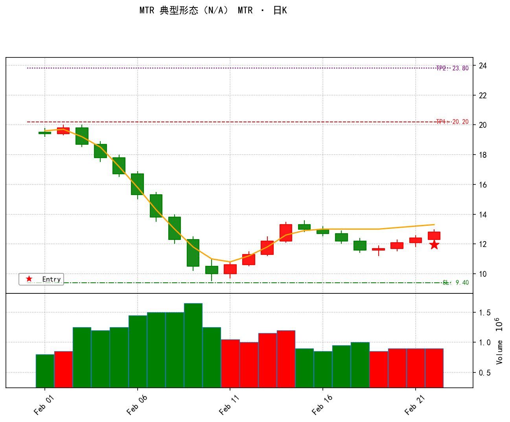

docs/MTR_V35_0_STRATEGY.md 是历史 spec，已和代码多处漂移，本卡以代码为准。mtr_strategy.py 注释写 V30.0/描述写 V35.0、真正干活的结构引擎 mtr_structural_v35.py 注释已到 V36.x。当前生产跑的是引擎 V36.x 那套逻辑，对外注册名 MTR_V35_STRUCTURAL、展示名 MTR。mtr_structural_v35.py:31，V36.1 放宽）。本卡按 0.786 写。hunter.py:128 process_ai_daily 调 core/api_client.py:15 query_deepseek 做二审，format_prompt/parse_result 是真实被调用的审计逻辑（当 get_metadata()['ai_audit']=True 时）。MTR 当前 ai_audit: False（mtr_strategy.py:60）不是"没接线"，而是主动跳过——因 DeepSeek 偶发幻觉、verdict 不可靠，先关掉待修复；重开只需把该标志改回 True。真实流程 = Python找结构 +（可选AI审计）+ 人工在 TradingView 精筛 + 券商下单。GeometricTrendlineEngine 和 _check_trendline_break 仍在文件里，但匹配时不调用，改用"EMA 缺口K"当突破证据（mtr_structural_v35.py:305-308 标 DEPRECATED）。mtr_structural_v35.py:194）。_find_signal_bar 只看单根阳线收上半部、不要求站 EMA；入场=信号K最高价 Buy Stop）。用户研究后明确新口径——信号K=①TL后首次收站EMA20 + ②连续阳≥2 + ③收在最高附近；入场=信号K后回调的「高1(High-1)」逐根挂突破单。详见文末附录，实施前需改代码+回测。
hunter.py 编排层按各策略 ai_audit 开关调用 DeepSeek），当前多数策略因 DeepSeek 幻觉临时设 False 跳过、等同技术面直通。买点是信号K高点的 Buy Stop（突破才成交），止损/目标画在图上，次日开盘前人工挂条件单；持仓管理（动态止盈/跟踪止损）由人工在券商做，生产绝不执行。

notifier.generate_chart_bytes）用合成数据生成，非真实个股。对照六类看：左上 H0 主高（EMA20 上方）→ 一路阴跌至 L1 极值（卖压高潮，橙线 EMA20 全程压在价格上方）→ 第一腿反弹上穿 EMA20（H1，性质改变，二类）→ 回调 TL 回到 EMA 下方踩前低（三类）→ 末端红星 Entry=信号K（强阳收盘上半部）→ 绿线 SL=min(L1,TL)、红线 TP1=2R、紫线 TP2=3R（四类）。| 规矩 | 现在怎么设 | 大白话 / 调它会怎样 | |
|---|---|---|---|
| 一、背景判断 这是不是一段"够狠"的下跌主趋势 | |||
| 1 | 趋势深度门槛 | L1 比近期最高跌 ≥ 5 ATR（trend_depth≥5.0） | 跌得不够深只是正常回调，不算"主趋势反转"候选。mtr_strategy.py:284-287 直接跳过。调大→更挑、信号更少。 |
| 2 | H0 是真正的高点 | H0 价格=区间内最高，且 H0 那根K的 high 在 EMA20 上方 | 确保我们是从一段明确下跌里找反转，小反弹的高点不算。mtr_structural_v35.py:92-98。 |
| 3 | 下跌够"纯" | H0→L1 区间 ≥55% 的K线收盘在 EMA20 下方 | 这段下跌要干净利落，别夹一堆反弹。_validate_stage_1_np（mtr_structural_v35.py:280-283）。调高→要求更极端的主跌。 |
| 二、第一腿突破 L1→H1：空头第一次被打退，叫"性质改变 / Change of Character" | |||
| 1 | 反弹幅度（斐波那契） | (H1−L1)/(H0−L1) 在 0.382~0.786 | 从最低点反弹的高度，占整段跌幅的 38%~79%。太小=熊旗继续跌；太大=V型反转不算MTR。mtr_structural_v35.py:30-31。⚠️ 文档写 0.618，代码实际 0.786。 |
| 2 | 至少 1 根 EMA 缺口K | L1→H1 区间至少一根K的 low > EMA20 | 多头得有根K线整根站在均线之上，证明它真发力了（不止收盘蹭上去）。mtr_structural_v35.py:296-299。 |
| 3 | H1 收盘站上 EMA20 | H1 那根K收盘 > EMA20 | 反弹最高点收在均线之上，确认突破成功。mtr_structural_v35.py:300-303。 |
| 4 | 耗时最短 | L1→H1 ≥ 3 根 | 至少涨 3 天，排除单日脉冲。MIN_BARS["L1_to_H1"]=3（mtr_structural_v35.py:24-25）。 |
| 三、回调测试 H1→TL：多头回来踩一脚前低，叫"测试 / Test" | |||
| 1 | 回撤深度（斐波那契） | (H1−TL)/(H1−L1) 在 0.500~0.786 | 从第一腿高点回吐的幅度，占第一腿涨幅的 50%~79%。太浅=可能直接起飞变盘整；太深=破位风险大。mtr_structural_v35.py:32。 |
| 2 | TL 回到空头地盘 | TL 那根K收盘在 EMA20 下方 | 回调要真正回到均线下方测试，停在均线上方不算数。mtr_structural_v35.py:171。 |
| 3 | 耗时最短 | H1→TL ≥ 2 根 | 回调至少走 2 天。MIN_BARS["H1_to_TL"]=2。 |
| 4 | 别跌太狠 | H1 之后最低价不能破 L1×0.80 | 回调跌破前低太多，这轮反转尝试就废了，标记过期不再追。mtr_structural_v35.py:144。调大→更宽容、能接住深回调。 |
| 四、开仓计划 买点 / 止损 / 止盈三件套 | |||
| 1 | 买点 | 信号K最高价挂 Buy Stop（突破才买） ⚠️ 此为当前生产逻辑；用户 2026-09-23 已修订为高1突破，见文末附录 | 信号K定义：TL 之后出现阳线且收盘在K线上半部（最多往后找 16 根）。等一根像样的阳线确认止跌，涨过它最高价才成交。_find_signal_bar（mtr_structural_v35.py:225-278）；买点写入 mtr_entry_price（mtr_strategy.py:299,342）。 |
| 2 | 止损 | min(L1最低价, TL测试价) − 1 分 | 跌破前低或测试低点就跑，认赔。get_sl（mtr_strategy.py:329-338）。 |
| 3 | 目标价（两个） | TP1 = 买点 + 2R；TP2 = 买点 + 3R（R=买点−止损） | 第一目标赚 2 倍风险，第二目标 3 倍；正常 MTR 给到 2R 就够。mtr_strategy.py:346-348。 |
| 五、人机协同工作流 MTR 特色，替代 gap_h2 的"持仓管理回测专用"类 | |||
| 1 | Python 雷达（日线扫描） | 全市场扫 H0−L1−H1−TL 结构，七维总分 ≥ 50 → 标记 SETUP_READY | 结构齐全且打分够才推提醒"MTR结构就绪，关注TL附近机会"。mtr_structural_v35.py:190-197。 |
| 2 | 潜力雷达 | H1→TL 还没满 25 根、价格还在买区内 → SETUP_FORMING（固定 45 分） | 结构在形成中、还没完全成型的"预备信号"，优先级低于 READY。mtr_structural_v35.py:203-219。 |
| 3 | AI 二次审计 | ai_audit=False → 本策略暂时跳过 DeepSeek 二审 | 审计功能已完整接线（hunter.py:128 process_ai_daily → query_deepseek）；当前因 DeepSeek 幻觉关掉，重开只需把 ai_audit 改 True。关掉时等同技术面直通，由人工在 TradingView 看信号K成色。 |
| 4 | 人工决策 | 左侧在 L1 上方挂 Limit（限价）；右侧在信号K高点挂 Stop（突破） | 自行在图上构建 H2；持仓管理（止损移动、2R止盈）全在券商人工做。 |
| 六、打分展示 七维度 100 分，≥ 50 才出信号；分项解释"为什么值不值得跟" | |||
| # | 维度 | 权重 | 现在怎么设 / 大白话 |
|---|---|---|---|
| — | 触发门槛 | — | 七维总分 ≥ 50 才标记 SETUP_READY（mtr_structural_v35.py:190、_calculate_quality_score_v36:519-592）。调门槛=直接改信号多少。 |
| 1 | 结构精度 | 15 | 反弹比例 (H1−L1)/(H0−L1) 越接近 0.5 分越高。 |
| 2 | 趋势线突破 | 10 | H1 收盘>EMA 得 8；H1 最低>EMA（均线缺口）得 10。 |
| 3 | 反弹通道 | 20 | 跳空数量 + K线重叠度低(强趋势) + 连续阳线多 → 高分。 |
| 4 | 回调通道质量 | 35（最高） | 向下缺口已回补才好 + 重叠度高(空头弱) + 连续阴线少 + 空头高潮后 Pin Bar(下影长) → 高分。 |
| 5 | 极值位置 | 5 | TL 紧贴 L1（更高低点 Higher Low）分高；大幅 Lower Low 分低。 |
| 6 | 信号K质量 | 10 | 实体大（实体/ATR）+ 光头阳（无上影）分高。 |
| 7 | 趋势深度 | 5 | trend_depth≥5 ATR 起评，越深分越高。 |
get_metadata()['supported_timeframes']=['daily']，mtr_strategy.py:58），不在周线扫描池（周线只有缺口三家族）。
_find_signal_bar（mtr_structural_v35.py:225-278）产出——只看"阳线 + 收在K线上半部(≥0.5)"、且注释明确"不要求站上 EMA20"，只看单根不数连阳。mtr_strategy.py:299,342 的 mtr_entry_price = signal_bar['high']），没有高1 trailing 挂单。mtr_structural_v35.py / mtr_strategy.py 并跑回测。
| # | 条件 | 大白话 |
|---|---|---|
| ① | 收盘价首次站上 EMA20 | 取代旧的"仅收在上半部"；要先回到均线之上才算多头真正表态。 |
| ② | 连续阳线 ≥ 2（待回测调成 3） | 不是一根阳线就信，要有连续两三天上涨的确认。 |
| ③ | 信号K收在最高附近（close_loc=(close−low)/(high−low) ≥ 0.8，约等于光头/近光头阳） | 比旧的"上半部(≥0.5)"更严，要收在当天价格区间的顶部。 |
running_max = 信号K以来最高高点；high ≤ running_max（没再创出新高）→ 回调确认，把触发线 ref 锁在回调前的 running_max（即"高1"）；high > ref → 以 ref 挂 Buy Stop 成交（突破高1）；low ≤ SL → 撤单，无交易（唯一失效条件，不抄 gap_h2 的"破地板/先达目标/超时"）。mtr_structural_v35.py（同一批结构，OLD vs NEW 公平对比）；OLD/NEW 仅信号K与入场不同。min(L1低点, TL低点) − 0.01；TP = 2R；退出用 core/backtest_engine.simulate_trade_unified（统一扣费：印花税卖 5bps + 佣金双边 3bps）。close > EMA20 ② 连续阳线 ≥2 ③ close_loc=(close−low)/(high−low) ≥ 0.8（前置：H1→TL 段内已有 close<EMA20，TL 本身即满足）。low≤SL 撤单。tests/mtr_backtest_single_stock.py；产物：archive/mtr_backtest/。| 指标 | OLD 生产逻辑 | NEW 版本 B |
|---|---|---|
| 触发交易数 | 19 | 14（少 5：3 无信号 + 4 等待期破SL撤单） |
| 净胜率 | 52.63%（Wilson 95%：31.7%~72.7%） | 21.43%（7.6%~47.6%） |
| EV（净 R） | +0.16 | −0.25 |
| 平均持仓 | 31.6 根 | 52.6 根（多接近 60 根上限，说明常拖到超时） |
| 指标 | OLD 生产逻辑 | NEW 版本 B（已选） | 优劣 |
|---|---|---|---|
| 触发交易数 | 31888 | 7913（少 75%） | OLD 更多 |
| 判无信号的结构 | 43 | 26651（占 68%） | B 极挑剔 |
| 净胜率 | 45.09%（CI 44.6~45.6） | 48.14%（CI 47.0~49.2） | B 胜 |
| EV（净 R） | +0.1219 | +0.2272 | B 胜（↑86%） |
| 平均持仓 | 26.3 根 | 38.7 根 | OLD 更短 |
| 等待期破 SL 撤单 | 3440 | 3596 | 相当 |
| 踏空（无回调） | — | 358 | B 特有 |
| 年份 | OLD | NEW 版本 B | 谁赢 |
|---|---|---|---|
| 2023（弱） | 28.4% / −0.75 | 28.5% / −0.23 | B 远好（少亏） |
| 2024 | 44.3% / +0.18 | 48.3% / +0.26 | B 好 |
| 2025（强牛） | 59.3% / +0.55 | 58.3% / +0.43 | OLD 好（早进场吃动量） |
| 2026 | 29.8% / −0.19 | 30.1% / −0.17 | B 略好 |
archive/mtr_backtest/full_market_signals.csv（38994 行明细）+ archive/mtr_backtest/full_market_summary.json（汇总）；脚本 tests/mtr_backtest_full_market.py（全市场）+ tests/mtr_backtest_single_stock.py（单股）；人工验证图 archive/mtr_backtest/verify_win_sample.png（000561 止盈）/ verify_loss_sample.png（002363 止损），两样本信号K均已逐根数据核验（TL 后首次站上 EMA20 = 连阳末端）。
| 项目 | 旧生产逻辑（OLD） | 新规则·版本 B（已选） |
|---|---|---|
| 信号K | 09-07（C58.81，仍在 EMA 下方） | 09-09（C65.22，光头阳 close_loc=1.0，首根收上 EMA） |
| 入场价 | 59.16（信号K最高价） | 65.76（09-14 突破高1 成交，等回调版） |
| SL | 50.70 | 50.70（相同） |
| R（风险） | 8.46 | 14.53（↑72%） |
| TP1(2R) | 76.08 | 94.29（↑24%） |
| 该段行情最高 | 75.96（已触 2R） | 75.96＝仅 +0.74R，距 TP1 还差 1.26R |